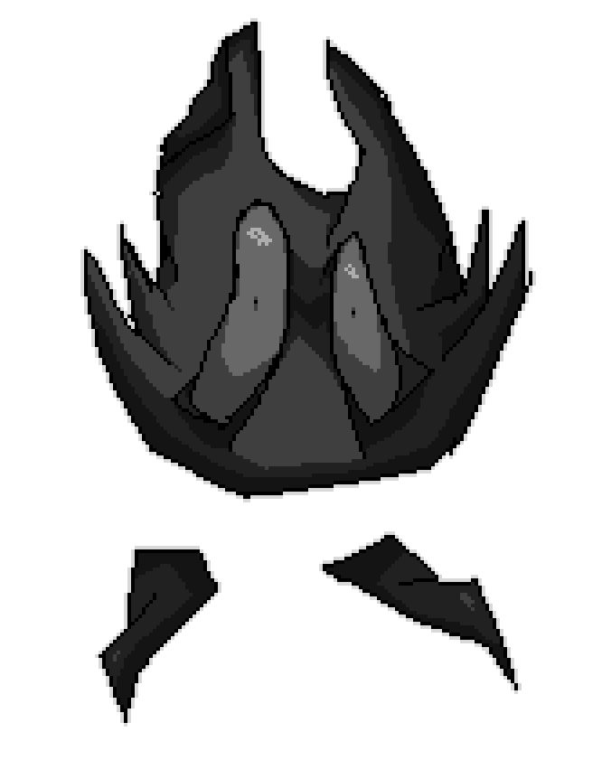

Catty Navio - Catanic Castle

Catty Navio é o protagonista inicial e principal do jogo Catanic Castle, sendo similar a uma bola de pelo, com similaridades a um gato.
Seu objetivo é escalar o Catanic Castle para conseguir dinheiro suficiente e escapar de seu débito de aluguel(que inclui seu corpo como seguro).
No caminho, Catty encontra donos de lojas locais como Edward e Chef Bot, que os vendem perks para ajuda-lo, mas também forçam o Catty a chamar guardas e pegar perks que o enfraquecem.
SEM MAIS SPOILERS